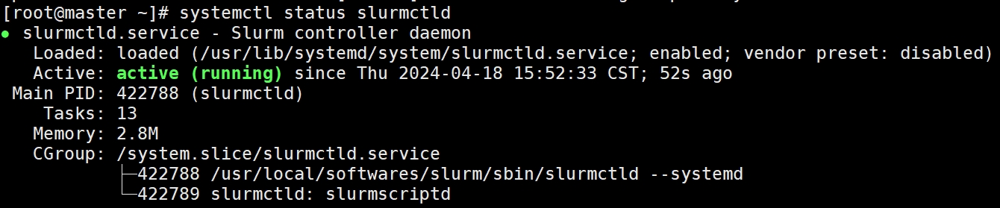
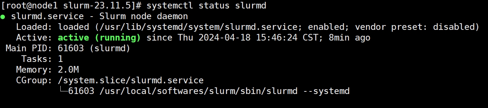

背景介绍 本文紧接着：Centos8集群Slurm作业管理系统安装（一） ，考虑通过源码安装munge和slurm。
源码安装munge 配置munge用户信息(控制节点和计算节点) yum -y remove munge munge-libs munge-devel userdel -r munge export MUNGE_USER=2024 groupadd -g $MUNGE_USER munge useradd -m -c "MUNGE User" -d /var/lib/munge -u $MUNGE_USER -g munge -s /sbin/nologin munge
安装munge(控制节点和计算节点) yum -y install tar gcc gcc-c++ make openssl openssl-devel wget tar -xvf munge-0.5.16.tar.xz export SOFTWARES=/usr/local/softwares mkdir $SOFTWARES cd munge-0.5.16 ./configure --prefix=$SOFTWARES/munge --bindir=$SOFTWARES/munge/bin --sbindir=$SOFTWARES/munge/sbin --sysconfdir=$SOFTWARES/munge/etc --localstatedir=$SOFTWARES/munge/var --with-runstatedir=$SOFTWARES/munge/run --libdir=$SOFTWARES/munge/lib --includedir=$SOFTWARES/munge/include make && make install
添加环境变量(控制节点和计算节点) echo 'export PATH=/usr/local/softwares/munge/bin:/usr/local/softwares/munge/sbin:$PATH' > /etc/profile.d/munge_envir.sh source /etc/profile
产生秘钥文件(控制节点) chown munge:munge $SOFTWARES/munge/etc/munge sudo -u munge $SOFTWARES/munge/sbin/mungekey -v ls $SOFTWARES/munge/etc/munge/munge.key scp $SOFTWARES/munge/etc/munge/munge.key root@node1:$SOFTWARES/munge/etc/munge/munge.key #复制秘钥到计算节点
设置相关权限(控制节点) chown munge: $SOFTWARES/munge/etc/munge/munge.key chmod 400 $SOFTWARES/munge/etc/munge/munge.key chown -R munge: $SOFTWARES/munge/var/lib/munge mkdir -p $SOFTWARES/munge/run/munge chown -R munge: $SOFTWARES/munge/run/munge chown -R munge: $SOFTWARES/munge/var/log/munge
设置相关权限(计算节点) chown munge: $SOFTWARES/munge/etc/munge/munge.key chmod 700 $SOFTWARES/munge/etc/munge chown -R munge: $SOFTWARES/munge/etc/munge chown -R munge: $SOFTWARES/munge/var/lib/munge mkdir -p $SOFTWARES/munge/run/munge chown -R munge: $SOFTWARES/munge/run/munge chown -R munge: $SOFTWARES/munge/var/log/munge
启动程序(控制节点和计算节点) cp $SOFTWARES/munge/lib/systemd/system/munge.service /etc/systemd/system/munge.service # 控制节点 systemctl start munge systemctl enable munge # 计算节点 systemctl start munge systemctl enable munge
验证(控制节点) [root@master system]# munge -n|unmunge STATUS: Success (0) ENCODE_HOST: master (172.16.34.127) ENCODE_TIME: 2024-04-17 19:52:16 +0800 (1713354736) DECODE_TIME: 2024-04-17 19:52:16 +0800 (1713354736) TTL: 300 CIPHER: aes128 (4) MAC: sha256 (5) ZIP: none (0) UID: root (0) GID: root (0) LENGTH: 0 [root@master system]# munge -n|ssh node1 unmunge STATUS: Success (0) ENCODE_HOST: master (172.16.34.127) ENCODE_TIME: 2024-04-17 19:53:37 +0800 (1713354817) DECODE_TIME: 2024-04-17 19:53:37 +0800 (1713354817) TTL: 300 CIPHER: aes128 (4) MAC: sha256 (5) ZIP: none (0) UID: root (0) GID: root (0) LENGTH: 0
编译一些其他支持的软件 由于我的计算节点的/opt是挂载到控制节点的/opt上的因此，下列软件只需要安装在控制节点的/opt下就行了
安装freeipmi，用来实现省电 wget https://ftp.gnu.org/gnu/freeipmi/freeipmi-1.6.11.tar.gz tar zxvf freeipmi-1.6.11.tar.gz mkdir /opt/freeipmi yum install libgcrypt-devel ./configure --prefix=/opt/freeipmi --exec-prefix=/opt/freeipmi --sysconfdir=/opt/freeipmi/etc --localstatedir=/opt/freeipmi/var make && make install # vim /etc/profile.d/lib.sh export LD_LIBRARY_PATH=/lib64:/lib # source /etc/profile.d/lib.sh # vim /etc/profile.d/freeipmi_env.sh export FREEIPMI_HOME=/opt/freeipmi export PATH=$FREEIPMI_HOME/sbin:$PATH export LD_LIBRARY_PATH=$FREEIPMI_HOME/lib:$LD_LIBRARY_PATH export LD_LIBRARY_PATH=$FREEIPMI_HOME/lib/pkgconfig:$LD_LIBRARY_PATH # source /etc/profile.d/freeipmi_env.sh
安装hwloc 可以用来显示CPU拓扑，查看CPU各级缓存以及各个核、物理CPU之间，可以共享哪一级别的CPU cache
wget https://download.open-mpi.org/release/hwloc/v2.9/hwloc-2.9.3.tar.gz tar zxvf hwloc-2.9.3.tar.gz cd hwloc-2.9.3/ mkdir -pv /opt/hwloc ./configure --prefix=/opt/hwloc make && make install # vim /etc/profile.d/hwloc_env.sh export HWLOC_HOME=/opt/hwloc export PATH=$HWLOC_HOME/bin:$PATH export PATH=$HWLOC_HOME/sbin:$PATH export LD_LIBRARY_PATH=$HWLOC_HOME/lib:$LD_LIBRARY_PATH export LD_LIBRARY_PATH=$HWLOC_HOME/lib/pkgconfig:$LD_LIBRARY_PATH # source /etc/profile.d/hwloc_env.sh
安装libevent wget https://github.com//libevent/libevent/releases/download/release-2.1.12-stable/libevent-2.1.12-stable.tar.gz tar zxvf libevent-2.1.12-stable.tar.gz cd libevent-2.1.12-stable/ mkdir /opt/libevent ./configure --prefix=/opt/libevent make && make install # vim /etc/profile.d/libevent_env.sh export LIBEVENT_HOME=/opt/libevent export PATH=$LIBEVENT_HOME/bin:$PATH export LD_LIBRARY_PATH=$LIBEVENT_HOME/lib:$LD_LIBRARY_PATH export LD_LIBRARY_PATH=$LIBEVENT_HOME/lib/pkgconfig:$LD_LIBRARY_PATH # source /etc/profile.d/libevent_env.sh
安装pmix wget https://github.com/openpmix/openpmix/releases/download/v4.2.8/pmix-4.2.8.tar.gz tar zxvf pmix-4.2.8.tar.gz mkdir -pv /opt/pmix yum -y install python3 cd pmix-4.2.8/ ./configure --prefix=/opt/pmix --with-libevent=/opt/libevent --with-hwloc=/opt/hwloc --with-munge=$SOFTWARES/munge --with-munge-libdir=$SOFTWARES/munge/lib make && make install # vim /etc/profile.d/pmix_env.sh export PMIX_HOME=/opt/pmix export PATH=$PMIX_HOME/bin:$PATH export LD_LIBRARY_PATH=$PMIX_HOME/lib:$LD_LIBRARY_PATH export LD_LIBRARY_PATH=$PMIX_HOME/lib/pmix:$LD_LIBRARY_PATH export LD_LIBRARY_PATH=$PMIX_HOME/lib/pkgconfig:$LD_LIBRARY_PATH # source /etc/profile.d/pmix_env.sh
安装ucx wget https://github.com/openucx/ucx/releases/download/v1.15.0/ucx-1.15.0.tar.gz tar zxvf ucx-1.15.0.tar.gz cd ucx-1.15.0/ mkdir /opt/ucx -pv ./configure --prefix=/opt/ucx make && make install # vim /etc/profile.d/ucx_env.sh export UCX_HOME=/opt/ucx export PATH=$UCX_HOME/bin:$PATH export LD_LIBRARY_PATH=$UCX_HOME/lib:$LD_LIBRARY_PATH export LD_LIBRARY_PATH=$UCX_HOME/lib/ucx:$LD_LIBRARY_PATH export LD_LIBRARY_PATH=$UCX_HOME/lib/pkgconfig:$LD_LIBRARY_PATH # source /etc/profile.d/ucx_env.sh
安装openmpi yum -y install perl gcc-gfortran wget https://download.open-mpi.org/release/open-mpi/v4.1/openmpi-4.1.6.tar.gz tar zxvf openmpi-4.1.6.tar.gz cd openmpi-4.1.6/ mkdir /opt/openmpi -pv ./configure --prefix=/opt/openmpi --with-libevent=/opt/libevent --with-hwloc=/opt/hwloc --with-pmix=/opt/pmix --with-ucx=/opt/ucx make && make install # vim /etc/profile.d/openmpi_env.sh export OPENMPI_HOME=/opt/openmpi export PATH=$OPENMPI_HOME/bin:$PATH export LD_LIBRARY_PATH=$OPENMPI_HOME/lib:$LD_LIBRARY_PATH export LD_LIBRARY_PATH=$OPENMPI_HOME/lib/openpmi:$LD_LIBRARY_PATH export LD_LIBRARY_PATH=$OPENMPI_HOME/lib/pkgconfig:$LD_LIBRARY_PATH # source /etc/profile.d/openmpi_env.sh
为计算节点设置环境变量 cd /etc/profile.d scp lib.sh freeipmi_env.sh hwloc_env.sh libevent_env.sh pmix_env.sh ucx_env.sh openmpi_env.sh root@node1:/etc/profile.d/ # cd /etc/profile.d source lib.sh source freeipmi_env.sh source hwloc_env.sh source libevent_env.sh source pmix_env.sh source ucx_env.sh source openmpi_env.sh
安装mariadb 可以参考：Centos8集群Slurm作业管理系统安装（二）
源码安装slurm 配置slurm用户信息(控制节点和计算节点) export SLURM_USER=2025 groupadd -g $SLURM_USER slurm useradd -m -c "SLURM manager" -d /var/lib/slurm -u $SLURM_USER -g slurm -s /bin/bash slurm
安装slurm(控制节点和计算节点) yum -y install python3 readline-devel pam-devel perl-ExtUtils-MakeMaker mailx ucx-devel json-c-devel
前往：https://centos.pkgs.org/ 下载freeipmi-devel，lbzip2和hwloc-devel，并安装
yum localinstall freeipmi-devel-1.6.14-2.el8.i686.rpm hwloc-devel-2.2.0-3.el8.i686.rpm lbzip2-2.5-15.20171011gitb6dc48a.el8.x86_64.rpm
tar xvf slurm-23.11.5.tar.bz2 ./configure --prefix=$SOFTWARES/slurm --bindir=$SOFTWARES/slurm/bin --sbindir=$SOFTWARES/slurm/sbin --sysconfdir=$SOFTWARES/slurm/etc --runstatedir=$SOFTWARES/slurm/run --libdir=$SOFTWARES/slurm/lib --includedir=$SOFTWARES/slurm/include --with-pmix=/opt/pmix --with-hwloc=/opt/hwloc --with-ucx=/opt/ucx --with-freeipmi=/opt/freeipmi --with-munge=$SOFTWARES/munge make && make install # vim /etc/profile.d/slurm_env.sh export SLURM_HOME=/usr/local/softwares/slurm export PATH=$SLURM_HOME/bin:$PATH export PATH=$SLURM_HOME/sbin:$PATH export LD_LIBRARY_PATH=$SLURM_HOME/lib:$LD_LIBRARY_PATH export LD_LIBRARY_PATH=$SLURM_HOME/lib/slurm:$LD_LIBRARY_PATH # source /etc/profile.d/slurm_env.sh # 拷贝systemd服务文件 cp ./etc/{sackd.service,slurmctld.service,slurmdbd.service,slurmd.service,slurmrestd.service} /usr/lib/systemd/system
配置slurm环境(控制节点) 控制节点不用来计算，因此会运行slurmctld和slurmdbd。
mkdir -pv $SOFTWARES/slurm/etc # slurmdbd.conf文件为slurmdbd服务的配置文件，所有者必须为slurm用户 cp ./etc/slurmdbd.conf.example $SOFTWARES/slurm/etc/slurmdbd.conf chown -R slurm:slurm $SOFTWARES/slurm/etc/slurmdbd.conf chmod -R 600 $SOFTWARES/slurm/etc/slurmdbd.conf # slurm.conf文件为slurmd、slurmctld的配置文件，所有者必须为root用户 cp ./etc/slurm.conf.example $SOFTWARES/slurm/etc/slurm.conf chown -R root:root $SOFTWARES/slurm/etc/slurm.conf # cgroup.conf文件配置默认即可 cp ./etc/cgroup.conf.example $SOFTWARES/slurm/etc/cgroup.conf chown -R root:root $SOFTWARES/slurm/etc/cgroup.conf # 建立slurmctld服务存储其状态等的目录，由slurm.conf中StateSaveLocation参数定义： mkdir -pv $SOFTWARES/slurm/var/spool/slurmctld chown -R slurm:slurm $SOFTWARES/slurm/var/spool/slurmctld chmod -R 755 $SOFTWARES/slurm/var/spool/slurmctld # 建立日志文件存储目录，并修改目录权限 mkdir -pv $SOFTWARES/slurm/var/run mkdir -pv $SOFTWARES/slurm/var/log/slurm touch $SOFTWARES/slurm/var/log/slurm/{slurmd,slurmctld,slurmdbd}.log chown -R slurm:slurm $SOFTWARES/slurm/var/log/slurm chmod -R 755 $SOFTWARES/slurm/var/log/slurm # 建立slurmd服务目录 mkdir -pv $SOFTWARES/slurm/var/spool/slurmd chown -R root:root $SOFTWARES/slurm/var/spool/slurmd chmod -R 755 $SOFTWARES/slurm/var/spool/slurmd # 创建pid文件并设置权限 touch $SOFTWARES/slurm/var/run/slurmdbd.pid chown slurm:slurm $SOFTWARES/slurm/var/run/slurmdbd.pid chmod 755 $SOFTWARES/slurm/var/run/slurmdbd.pid
修改配置文件(控制节点) slurmdbd的配置文件 vim $SOFTWARES/slurm/etc/slurmdbd.conf
# # # # ArchiveJobs=yes # ArchiveDir="/tmp" # ArchiveSteps=yes # ArchiveScript= # JobPurge=12 # StepPurge=1 # AuthType=auth/munge # 注意路径 AuthInfo=/usr/local/softwares/munge/run/munge/munge.socket.2 # DbdAddr=172.16.34.127 DbdHost=master # DbdPort=7031 SlurmUser=slurm # MessageTimeout=300 DebugLevel=verbose # DefaultQOS=normal,standby # 注意路径 LogFile=/usr/local/softwares/slurm/var/log/slurm/slurmdbd.log # 注意路径 PidFile=/usr/local/softwares/slurm/var/run/slurmdbd.pid # PluginDir=/usr/lib/slurm # PrivateData=accounts,users ,usage,jobs # TrackWCKey=yes # StorageType=accounting_storage/mysql StorageHost=172.16.34.127 # StoragePort=1234 StoragePass=123456 StorageUser=slurm StorageLoc=slurm_acct_db
slurmctld和slurmd的配置文件 vim $SOFTWARES/slurm/etc/slurm.conf
# slurm.conf file generated by configurator.html. # Put this file on all nodes of your cluster. # See the slurm.conf man page for more information. # ClusterName=cluster SlurmctldHost=master # SlurmctldHost= # # EnforcePartLimits=NO # Epilog= # EpilogSlurmctld= # FirstJobId=1 # MaxJobId=67043328 # GresTypes= # GroupUpdateForce=0 # GroupUpdateTime=600 # JobFileAppend=0 # JobRequeue=1 # JobSubmitPlugins=lua # KillOnBadExit=0 # LaunchType=launch/slurm # Licenses=foo*4,bar # MailProg=/bin/mail # MaxJobCount=10000 # MaxStepCount=40000 # MaxTasksPerNode=512 # MpiDefault= # MpiParams=ports= # PluginDir= # PlugStackConfig= # PrivateData=jobs ProctrackType=proctrack/cgroup # Prolog= # PrologFlags= # PrologSlurmctld= # PropagatePrioProcess=0 # PropagateResourceLimits= # PropagateResourceLimitsExcept= # RebootProgram= ReturnToService=1 # 注意路径 SlurmctldPidFile=/usr/local/softwares/slurm/var/run/slurmctld.pid SlurmctldPort=6817 # 注意路径 SlurmdPidFile=/usr/local/softwares/slurm/var/run/slurmd.pid SlurmdPort=6818 # 注意路径 SlurmdSpoolDir=/usr/local/softwares/slurm/var/spool/slurmd SlurmUser=slurm # SlurmdUser=root # SrunEpilog= # SrunProlog= # 注意路径 StateSaveLocation=/usr/local/softwares/slurm/var/spool/slurmctld # SwitchType= # TaskEpilog= TaskPlugin=task/affinity,task/cgroup # TaskProlog= # TopologyPlugin=topology/tree # TmpFS=/tmp # TrackWCKey=no # TreeWidth= # UnkillableStepProgram= # UsePAM=0 # # TIMERS # BatchStartTimeout=10 # CompleteWait=0 # EpilogMsgTime=2000 # GetEnvTimeout=2 # HealthCheckInterval=0 # HealthCheckProgram= InactiveLimit=0 KillWait=30 # MessageTimeout=10 # ResvOverRun=0 MinJobAge=300 # OverTimeLimit=0 SlurmctldTimeout=120 SlurmdTimeout=300 # UnkillableStepTimeout=60 # VSizeFactor=0 Waittime=0 # # SCHEDULING # DefMemPerCPU=0 # MaxMemPerCPU=0 # SchedulerTimeSlice=30 SchedulerType=sched/backfill SelectType=select/cons_tres # # JOB PRIORITY # PriorityFlags= # PriorityType=priority/multifactor # PriorityDecayHalfLife= # PriorityCalcPeriod= # PriorityFavorSmall= # PriorityMaxAge= # PriorityUsageResetPeriod= # PriorityWeightAge= # PriorityWeightFairshare= # PriorityWeightJobSize= # PriorityWeightPartition= # PriorityWeightQOS= # # LOGGING AND ACCOUNTING # AccountingStorageEnforce=0 # AccountingStorageHost= # AccountingStoragePass= # AccountingStoragePort= # AccountingStorageType= # AccountingStorageUser= # AccountingStoreFlags= JobCompHost=master JobCompLoc=slurm_jobcomp_db # JobCompParams= JobCompPass=123456 JobCompPort=3306 JobCompType=jobcomp/mysql JobCompUser=slurm # JobContainerType= JobAcctGatherFrequency=30 # JobAcctGatherType= SlurmctldDebug=info # 注意路径 SlurmctldLogFile=/usr/local/softwares/slurm/var/log/slurm/slurmctld.log SlurmdDebug=info # 注意路径 SlurmdLogFile=/usr/local/softwares/slurm/var/log/slurm/slurmd.log # SlurmSchedLogFile= # SlurmSchedLogLevel= # DebugFlags= # # POWER SAVE SUPPORT FOR IDLE NODES (optional) # SuspendProgram= # ResumeProgram= # SuspendTimeout= # ResumeTimeout= # ResumeRate= # SuspendExcNodes= # SuspendExcParts= # SuspendRate= # SuspendTime= # # COMPUTE NODES NodeName=node1 CPUs=4 Boards=1 SocketsPerBoard=1 CoresPerSocket=4 ThreadsPerCore=1 RealMemory=1778 PartitionName=compute Nodes=node1 Default=YES MaxTime=INFINITE State=UP
配置slurm环境(计算节点) mkdir -pv $SOFTWARES/slurm/etc/ mkdir -pv $SOFTWARES/slurm/var/spool/slurmd mkdir -pv $SOFTWARES/slurm/var/log/slurm mkdir -pv $SOFTWARES/slurm/var/run touch $SOFTWARES/slurm/var/log/slurm/slurmd.log chown -R slurm:slurm $SOFTWARES/slurm/var/log/slurm chmod -R 755 $SOFTWARES/slurm/var/log/slurm
复制配置文件到计算节点(控制节点) 保证所有节点的配置文件一致
scp $SOFTWARES/slurm/etc/slurm.conf node1:$SOFTWARES/slurm/etc/ scp $SOFTWARES/slurm/etc/cgroup.conf node1:$SOFTWARES/slurm/etc/
修改slurmctld.service(控制节点) 添加maridb服务，使得slurmctld服务在数据库服务之后启动
vim /usr/lib/systemd/system/slurmctld.service # 改为 After=network-online.target remote-fs.target munge.service mariadb.service sssd.service
启动程序(控制节点) systemctl enable slurmdbd slurmctld systemctl start slurmdbd slurmctld systemctl status slurmdbd slurmctld

启动程序(计算节点) systemctl enable slurmd systemctl start slurmd systemctl status slurmd

测试 基本测试 [root@master ~]# sinfo PARTITION AVAIL TIMELIMIT NODES STATE NODELIST compute* up infinite 1 idle node1 [root@master ~]# scontrol show partition PartitionName=compute AllowGroups=ALL AllowAccounts=ALL AllowQos=ALL AllocNodes=ALL Default=YES QoS=N/A DefaultTime=NONE DisableRootJobs=NO ExclusiveUser=NO GraceTime=0 Hidden=NO MaxNodes=UNLIMITED MaxTime=UNLIMITED MinNodes=0 LLN=NO MaxCPUsPerNode=UNLIMITED MaxCPUsPerSocket=UNLIMITED Nodes=node1 PriorityJobFactor=1 PriorityTier=1 RootOnly=NO ReqResv=NO OverSubscribe=NO OverTimeLimit=NONE PreemptMode=OFF State=UP TotalCPUs=4 TotalNodes=1 SelectTypeParameters=NONE JobDefaults=(null) DefMemPerNode=UNLIMITED MaxMemPerNode=UNLIMITED TRES=cpu=4,mem=1778M,node=1,billing=4 [root@master ~]# srun -N1 hostname node1
并行测试
安装anaconda3，安装方法可以参考：本地访问服务器的Jupyter notebook
由于之前我们已经安装了openmpi，所以我们可以安装mpi4pypip install mpi4py --user
编写脚本测试from mpi4py import MPIcomm = MPI.COMM_WORLD size = comm.Get_size() rank = comm.Get_rank() node_name = MPI.Get_processor_name() print ('Hello world from process %d at %s.' % (rank, node_name))
编写任务脚本# job.sh # !/bin/bash # SBATCH -n 4 # SBATCH -o myjob.out # SBATCH -e myjob.e # SBATCH -J mpi4py # SBATCH --nodes=1 mpirun -np 4 python3.8 mpi_helloworld.py
提交任务
查看结果，显示成功。[user_test@master test]$ cat myjob.out Hello world from process 3 at node1. Hello world from process 1 at node1. Hello world from process 2 at node1. Hello world from process 0 at node1.
参考